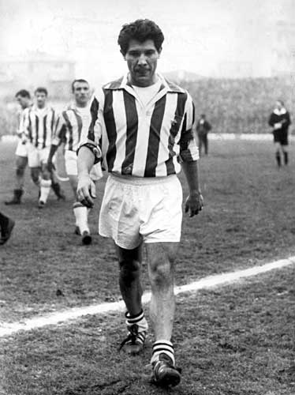

Omar SIVORI - 1961
- Le premier Ballon d'Or argentin
En 1961,
Omar Sivori
était le premier argentin de l'histoire à inscrire son nom au palmarès du Ballon d'Or France Football, et ce à l’age de 26 ans.
Nationalité : Italo-argentine
Né le 2 octobre 1935, à San Nicolas (ARG)
Décédé le 17 février 2005, à Buenos Aires (ARG)
Taille : 1,70
Poids : 70 kg
Poste : attaquant
Clubs : Teatro Municipal San Nicolas (1945-1952), River Plate (1952-1957), Juventus Turin (1957-1965), Naples (1965-1969) et River Plate (1969)
Palmarès de joueur : Copa America 1957 ; Championnat d'Argentine 1955, 1956 et 1957 ; Championnat d'Italie 1958, 1960 et 1961 ; Coupe d'Italie 1959 et 1960 ; meilleur buteur du Championnat d'Italie 1960 (27 buts)
Bilan en club : 398 matchs, 219 buts
Bilan en équipes nationales : 19 sélections, 9 buts (1955-1957) avec l'Argentine ; 9 sélections A, 8 buts (1961-1962) avec l'Italie
Bilan en phase finale de Coupe du monde : 1 participation, 2 matches (1962)
Palmarès Ballon d'Or : vainqueur en 1961
Carrière d'entraîneur : River Plate (1970), Argentine A (juillet-octobre 1973) et Velez Sarsfield (1978)
Classement du Ballon d’Or France Football 1961 :

Omar Sivori (Italie-Argentine / Juventus Turin),
46 pts.
Luis Suarez (Espagne / Inter Milan),
40 pts.
Johnny Haynes (Angleterre / Fulham),
22 pts.
Retour à l'accueil
 Omar SIVORI - 1961
Omar SIVORI - 1961